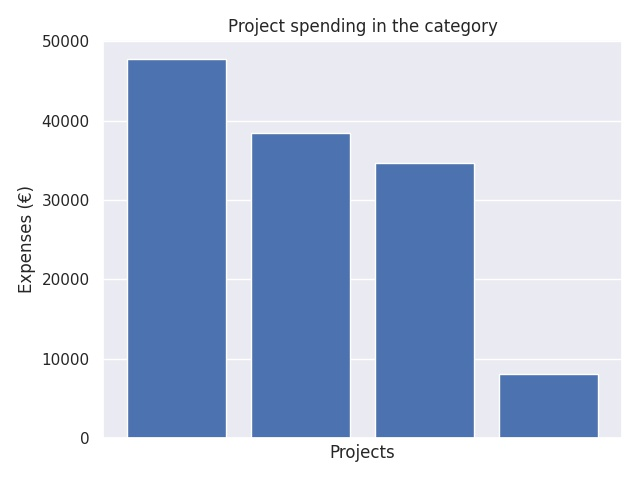

Kärkihanke 6 - Joustavan perusopetuksen (JOPO) toiminnan kehittäminen 2018
Category summary
32.2K spent on average
47.7K highest spending

Reports in the category
Laukaan kunta
Project name: JOPO2019
47.7K spent
Nakkilan kunta
Project name: Satakunnan joustava perusopetus (SataJopo)
38.4K spent
Laihian kunta
Project name: JOPOLLA PONTTA PERUSOPETUKSEEN - TUUMASTA TOIMEEN
34.6K spent
Paraisten kaupunki
Project name: LOJOPO 2
8.08K spent